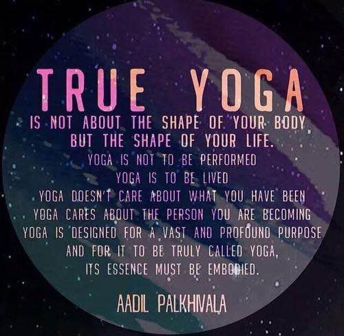

Vinyasa Flow Yoga classes for people of all ages, levels, shapes and sizes.
Having discovered that practising yoga hugely improved my own life and day to day functioning, I now seek to inspire others in a similar way by sharing the joy and wonder of yoga.
I believe that the most important thing in yoga and life generally is authenticity, being genuine and true to others and most importantly, yourself. Yoga can be for anyone, no matter what shape, size, age, background; it is accessible to anyone who gives it a chance. Yoga shouldn't be something competitive where people are compared, it's a journey of the self, through the self, to the self; so it doesn't matter how you look or how flexible you are, as long as you listen to your body and stay true and mindful, you will start to feel the many benefits of yoga. Bringing this from your mat to your everyday life is real yoga, and with time and practice will come more and more naturally; this is just one of the many delightful fruits of practising yoga.
Yoga is for everybody
Yoga is proven to help improve concentration, wellbeing and flexibility.
Recent studies show that yoga can help reduce the signs of ageing as the practice stimulates the para-sympathetic nervous system (the part that makes you relax!).
Yoga calms the mind, the body and the soul and helps all three to connect with each other. The word "yoga" comes from the Sanskrit root yuj, which means "to join" or "yoke".